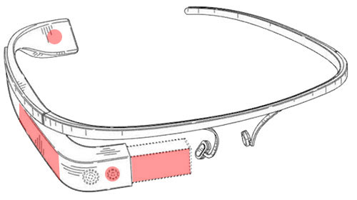

Glass > Especificações Raio-X no Google Glass Gustavo Guanabara Atualizado em 01/Maio/2013 Clique em qualquer área destacada da imagem para ter mais informações sobre os recursos do Google Glass. Qualquer ponto vermelho vai te levar a um lugar cheio de novas informações. 